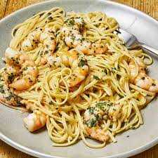

Shrimp Scampi

Shrimp Scampi is an awesome meal to show off for a date!
Ingredients
- 30 medium shrimp - peeled and deveined
- 2 tablespoons olive oil
- 2 tablespoons butter, melted
- 2 cloves garlic, minced
- 1/2 teaspoon kosher salt
- 1/4 teaspoon ground black pepper
Steps
- Preheat oven to 350 degrees F
- Toss the shrimp in a bowl with olive oil, melted butter, garlic, salt, and pepper; set aside for 10 minutes. Arrange the shrimp in a circular pattern in a round casserole dish.
- Bake in the preheated oven untik the shrimp are pink and cooked through, about 15 minutes.